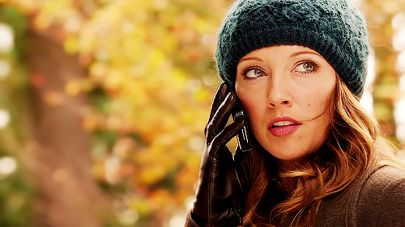
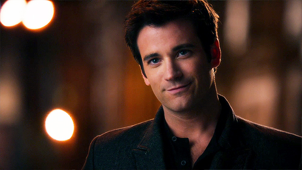
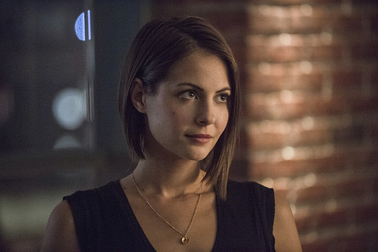
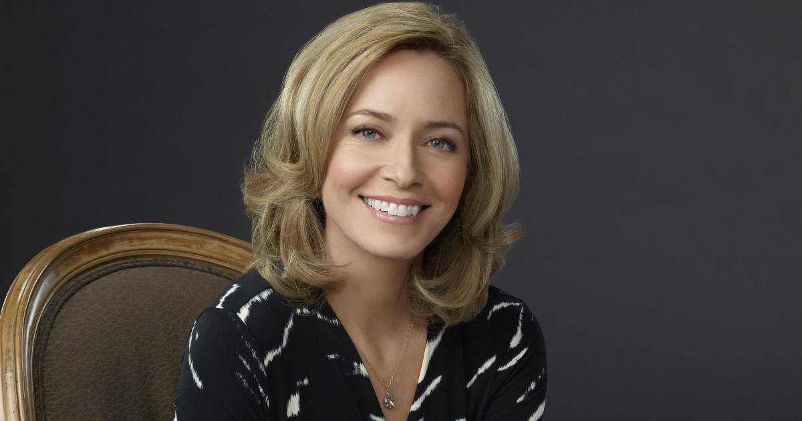
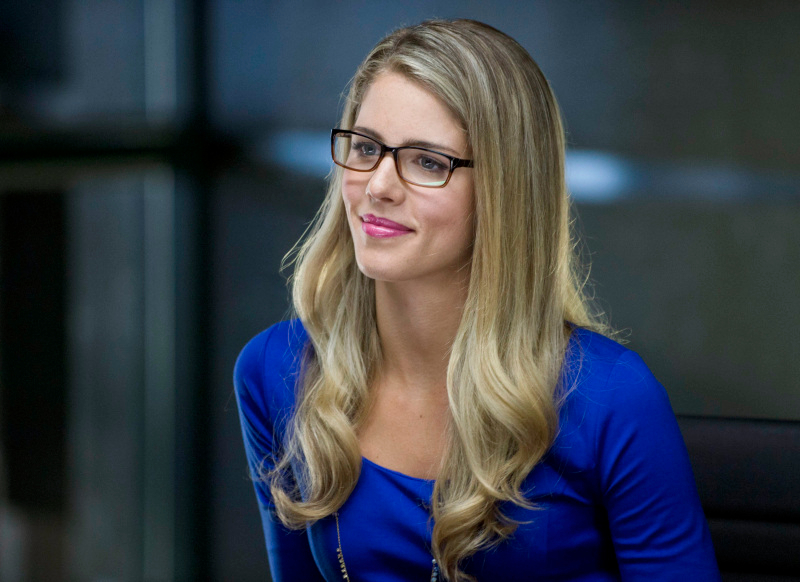
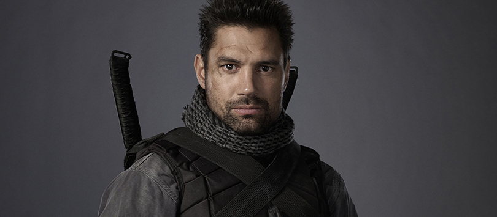
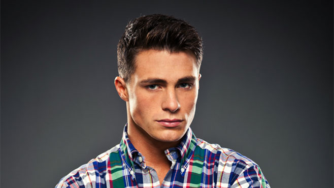

Oliver Queen
 Survivant d'un naufrage, il est resté prisonnier sur une île durant cinq ans. À son retour à Starling City, il devient un justicier, dans le but d'accomplir la dernière volonté de son père : arrêter les criminels de la ville grâce à une liste laissée par celui-ci. Il réussit à arrêter Malcolm Merlyn, le laissant pour mort et Slade, en l'emprisonnant dans une prison de l'ARGUS. Il a eu une aventure avec Sarah, la sœur de son ex-petite amie, Laurel Lance.
Survivant d'un naufrage, il est resté prisonnier sur une île durant cinq ans. À son retour à Starling City, il devient un justicier, dans le but d'accomplir la dernière volonté de son père : arrêter les criminels de la ville grâce à une liste laissée par celui-ci. Il réussit à arrêter Malcolm Merlyn, le laissant pour mort et Slade, en l'emprisonnant dans une prison de l'ARGUS. Il a eu une aventure avec Sarah, la sœur de son ex-petite amie, Laurel Lance.
Laurel Lance
 Laurel est avocate et ancienne petite amie d'Oliver. Sa sœur, Sarah, est morte durant le naufrage. Elle est la fille de l'inspecteur Lance. Elle apprendra plus tard qu'Oliver est Arrow et que Sarah, sa sœur est en vie. Lors de la troisième saison, elle reprend le rôle et le costume de Black Canary.
Katie Cassidy Katie CassidyTommy Merlyn
 Tommy est le meilleur ami d'Oliver. Sa mère est morte lorsqu'il avait huit ans, son père Malcolm travaille avec Moira Queen. Il sort avec Laurel et est également le gérant du Verdant. À la suite d'un conflit avec Oliver suite à la révélation de son identité secrète, il démissionne pour travailler avec son père. Il est laissé pour mort à la fin de la première saison durant le tremblement de terre survenu aux Glades, après avoir sauvé Laurel et s'être réconcilié avec son ami.
Colin Donnel Colin DonnelJohn Diggle "Dig"
 John Diggle est un ancien militaire qui est employé comme le garde du corps d'Oliver. Il l'aide ensuite dans sa quête contre le crime à Starling City. Son frère Andrew a été assassiné par Floyd Lawton alias Deadshot. Il croise son chemin à plusieurs reprises et veut à tout prix se venger. Il accorde finalement son pardon à Deadshot après avoir accompli une mission avec lui.
John Diggle est un ancien militaire qui est employé comme le garde du corps d'Oliver. Il l'aide ensuite dans sa quête contre le crime à Starling City. Son frère Andrew a été assassiné par Floyd Lawton alias Deadshot. Il croise son chemin à plusieurs reprises et veut à tout prix se venger. Il accorde finalement son pardon à Deadshot après avoir accompli une mission avec lui.
Thea Queen
 Thea est la petite sœur d'Oliver, ancienne droguée au Vertigo. À la suite d'un accident de voiture où elle était droguée au Vertigo, elle a été condamnée à une peine d'utilité publique et doit effectuer des travaux d'intérêt général au cabinet d'avocat de Laurel. Elle est la petite amie de Roy Harper.
Willa HollandQuentin Lance
 Père de Laurel et Sarah, il est inspecteur de police chargé d'enquêter sur Arrow. Il est devenu alcoolique à la suite de la mort de Sarah. Il veut au début à tout prix arrêter Arrow, mais va petit à petit l'aider dans sa quête contre le crime.
Père de Laurel et Sarah, il est inspecteur de police chargé d'enquêter sur Arrow. Il est devenu alcoolique à la suite de la mort de Sarah. Il veut au début à tout prix arrêter Arrow, mais va petit à petit l'aider dans sa quête contre le crime.
Moira Queen
 Père de Laurel et Sarah, il est inspecteur de police chargé d'enquêter sur Arrow. Il est devenu alcoolique à la suite de la mort de Sarah. Il veut au début à tout prix arrêter Arrow, mais va petit à petit l'aider dans sa quête contre le crime.
Felicity Smoak
 Père de Laurel et Sarah, il est inspecteur de police chargé d'enquêter sur Arrow. Il est devenu alcoolique à la suite de la mort de Sarah. Il veut au début à tout prix arrêter Arrow, mais va petit à petit l'aider dans sa quête contre le crime.
Emily Bett Rickards Emily Bett RickardsSlade Wilson
 Père de Laurel et Sarah, il est inspecteur de police chargé d'enquêter sur Arrow. Il est devenu alcoolique à la suite de la mort de Sarah. Il veut au début à tout prix arrêter Arrow, mais va petit à petit l'aider dans sa quête contre le crime.
Manu Bennett Manu BennettRoy Harper
 Père de Laurel et Sarah, il est inspecteur de police chargé d'enquêter sur Arrow. Il est devenu alcoolique à la suite de la mort de Sarah. Il veut au début à tout prix arrêter Arrow, mais va petit à petit l'aider dans sa quête contre le crime.
Colton Haynes Colton HaynesMalcolm Merlyn
 Il est le père de Tommy Merlyn et le PDG de Merlyn Global. Il a été entraîné par la Ligue des Assassins. Il créé une organisation secrète, Tempest, qui a pour but de détruire les Glades, quartier pauvre de Starling City. Sa femme Rebecca y a été assassiné.
Il est le père de Tommy Merlyn et le PDG de Merlyn Global. Il a été entraîné par la Ligue des Assassins. Il créé une organisation secrète, Tempest, qui a pour but de détruire les Glades, quartier pauvre de Starling City. Sa femme Rebecca y a été assassiné.
Ra's al Ghul
 Ra's al Ghul est le leader redouté de la Ligue des Assassins ainsi que le père de Nyssa al Ghul. Il est un grand ennemi d'Arrow et lui posera beaucoup de problème.
Ra's al Ghul est le leader redouté de la Ligue des Assassins ainsi que le père de Nyssa al Ghul. Il est un grand ennemi d'Arrow et lui posera beaucoup de problème.